Reviewing GitHub pull requests in a terminal
Intro
I recently got into an accident with my notebook, letting it fall hard on the floor causing the motherboard frame to break a little and the AC connector to not plug in anymore since the piece that held it was falling inside the notebook.
In the meantime of repairs I fetched my friend's spare notebook (more like abandoned) which was a 2GB positivo with an Intel Atom CPU. This forced me into a hard situation, I can't run heavy web browsers like Firefox and Chromium and even after settling with Luakit I found it still slugged when reviewing large pull requests.
With no other choice I turned to the only thing that stays fast on such an underpowered machine: CLI and TUI. And did what I do decently well enough, wrote a shell script to make stuff bearable.
pull requests
The first thing that needs to be done is to know what pull requests you're dealing it
so for that I used hub, a CLI tool to work on GitHub repositories. Using it was simple
enough, I just made it run whenever I called the script in certain situations.
# If the user executed pr-fetcher-daemon binary or invokes with the # first arg as daemon then we execute a PRs fetching daemon, hub pr list # takes a very long time, so run it every 5 minutes if [ "${0##*/}" = "pr-fetcher-daemon" ] || [ "$1" = "daemon" ]; then while true; do output="" output="$(hub pr list -f '(%i) (%NC) %t by %au%n')" [ -z "$output" ] && continue printf "%s\\n" "$output" > "$prfile" sleep 300 done fi
When I run pr-fetcher-daemon with my working directory set to a git repository it will fetch the pull requests present and put them neatly inside a file inside a temporary directory to be read later, doing that every 5 minutes (300 seconds) in a loop.
picking
If the user doesn't start the daemon surely he wants to pick a pull request and
work on it. This is where we use the fzy binary to provide them with a nice list
to pick.
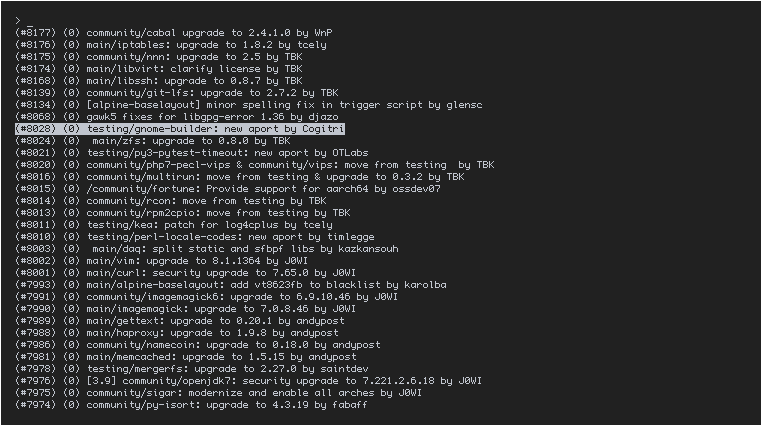
Checking
Before going into a pull request we need to check if the pull request has been
reviewed before. For that we again use the hub command.
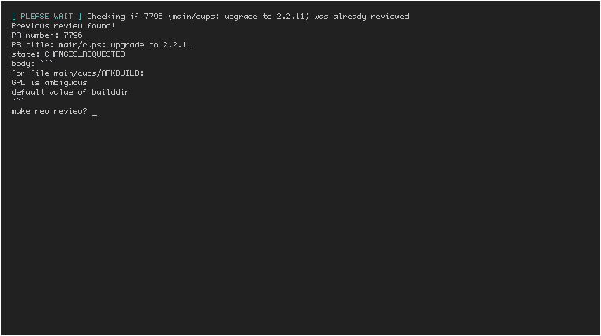
Checking Out
If we have no previous reviews or if we say yes to the question of having a new review then we check out the PR
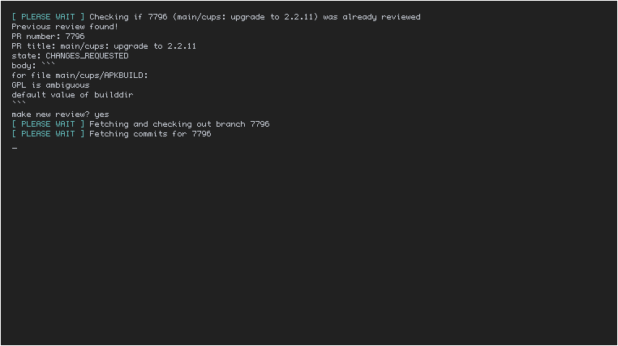
The following is the code to check out the pull request on your repo:
# Check if the pr is already fetched, if not fetch it and checkout it if git rev-parse --verify "$pr_num" >/dev/null 2>&1; then msg Switching to branch "$pr_num" gbr "$pr_num" else # Check out the pr num with the name of the pr branch msg Fetching and checking out branch "$pr_num" hub pr checkout "$pr_num" "$pr_num" >/dev/null 2>&1 & msg Fetching commits for "$pr_num" commits="$(hub api \ /repos/${uuser}/${urepo}/pulls/${pr_num}/commits \ | jq -r '.[].sha' &)" wait fi
Reviewing a commit
First thing we do is to pick a commit to review, if there is only one commit we go straight into it.
Picking it
We use fzy to pick a commit for us, we can pick any or just press ctrl-c to exit
to the next step
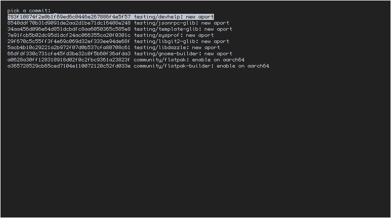
Reviewing it
For review we read the file with cat -n then pipe it into fzf with lots of
command line flags to make it bearable. Whatever is typed into the prompt and
returned by pressing enter is included in the review, to finish it just return
nothing by pressing enter directly.
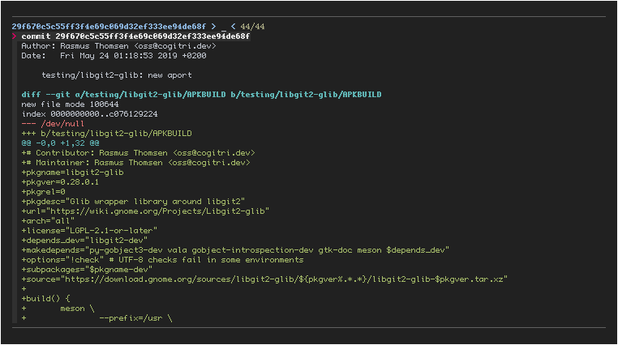
The follow is the code using to annotate a commit:
# Temporary directory that holds the files that represents the comments and # the commits tempdir="$(mktemp -d)" # Read comments for the PR until we have one that is just exit while true; do # If we have only one commit then just go to it instead of asking the user # what commit he wants to look at if [ "$commitcount" -eq 1 ]; then annotate_commit "$commits" "$tempdir" break fi # If the user has less than 3 commits then set lines to 3 since we can't have # a lower value to that [ "$commitcount" -lt 3 ] && lines=3 || lines=$commitcount tput clear # Clear the terminal yn="$(git show $commits -s --pretty=oneline | fzy \ --lines="$lines" \ --prompt="pick a commit: ")" yn="$(printf "%s\\n" "$yn" | cut -d ' ' -f1)" case "$yn" in '') break ;; # This is reached with 'fzy' when the user presses ctrl-c *) annotate_commit "$yn" "$tempdir" ;; esac done
Reviewing a file
After we are done reviewing individual commits, we can review files that were added and modified in the pull request, this is done to allow the reviewer to point out stuff that the commit missed.
Picking it
We pick a file the same way we picked a pull request!
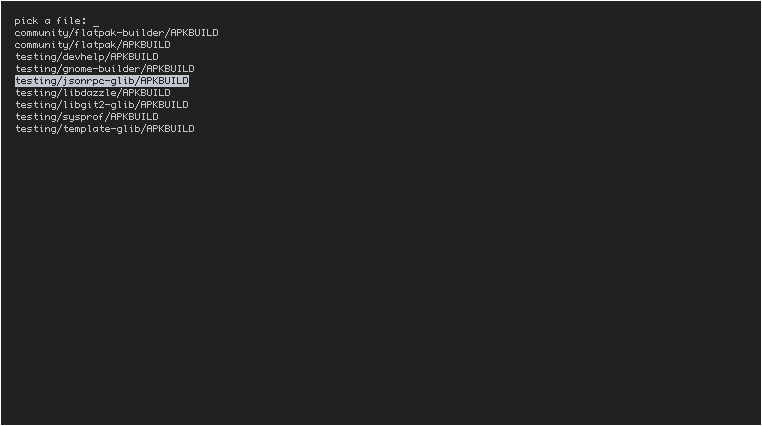
Reviewing it
Just like with the commit we pipe the file with cat -n to fzf!
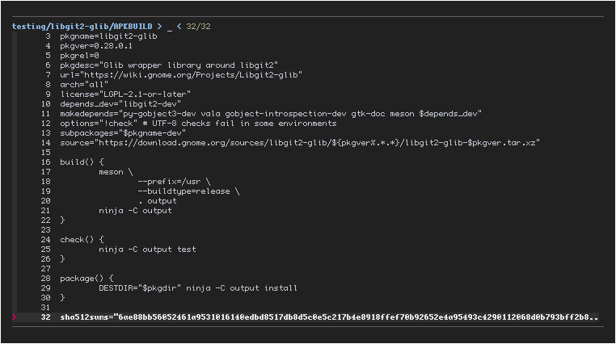
Because the code is very similar to the one to annotate commits I won't include it here.
Working on it locally
After we review it we start a shell to work on it locally, doing stuff such as building the package and testing it at runtime.
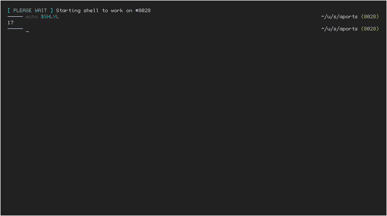
Sending review
After we finish our work on our shell, pr-fetcher will write a review and
put it up for us.
Approved
If we didn't write anything to review then we consider it a success and approve the pull request
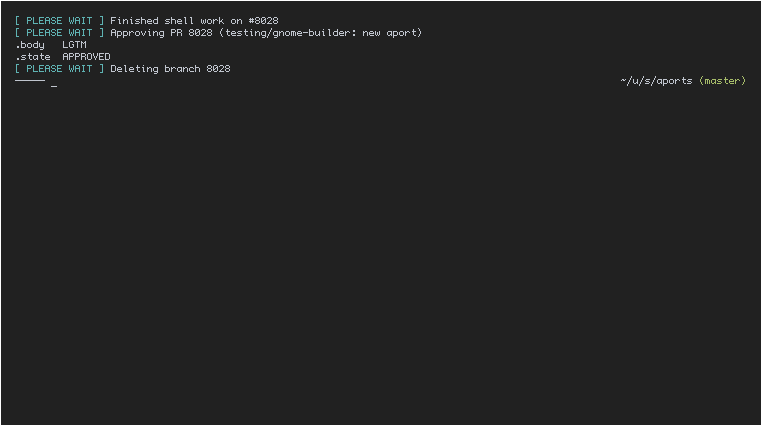
Request Changes
If we wrote anything back then we include it in the review where appropiate
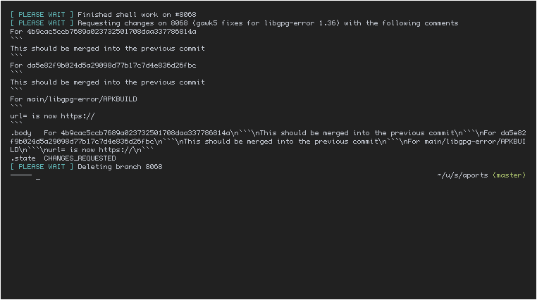
And this is how it looks if someone sees it from the web interface
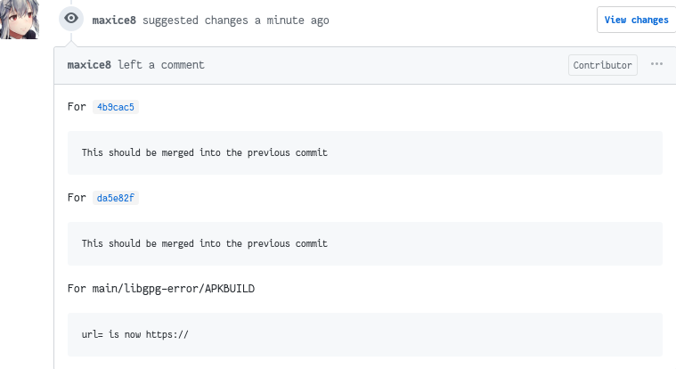
TODO:
There are a few things I'm still unhappy with and that I would like to be changed:
- Have a simple program that is a pager, for dealing with files and the commits, while having a simple input prompt. I asked (@Cogitri) to help deal with this.
- Have it ask for feedback after finishing the shell, currently there is no way to provide feedback if you find problems while testing it live.